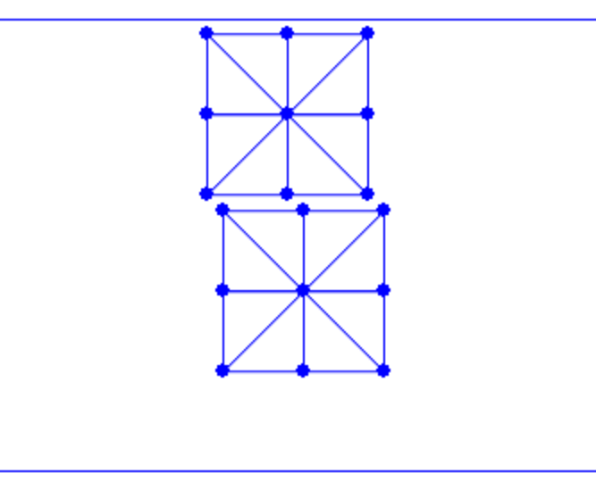

Scene Setup and Boundary Element Collection
To begin with, we set up a new scene with two squares falling onto the ground, compressed by the ceiling so that self-contact will occur between these squares.
Implementation 21.1.1 (Simulation setup, simulator.py).
# simulation setup
side_len = 0.45
rho = 1000 # density of square
E = 1e5 # Young's modulus
nu = 0.4 # Poisson's ratio
n_seg = 2 # num of segments per side of the square
h = 0.01 # time step size in s
DBC = [(n_seg + 1) * (n_seg + 1) * 2] # dirichlet node index
DBC_v = [np.array([0.0, -0.5])] # dirichlet node velocity
DBC_limit = [np.array([0.0, -0.7])] # dirichlet node limit position
ground_n = np.array([0.0, 1.0]) # normal of the slope
ground_n /= np.linalg.norm(ground_n) # normalize ground normal vector just in case
ground_o = np.array([0.0, -1.0]) # a point on the slope
mu = 0.4 # friction coefficient of the slope
# initialize simulation
[x, e] = square_mesh.generate(side_len, n_seg) # node positions and triangle node indices of the top square
e = np.append(e, np.array(e) + [len(x)] * 3, axis=0) # add triangle node indices of the bottom square
x = np.append(x, x + [side_len * 0.1, -side_len * 1.1], axis=0) # add node positions of the bottom square
In line 17, we adapt the DOF index of the ceiling from to , as we now have two squares. Line 26 generates the first square on the top, while lines 27 and 28 generate the second square on the bottom by creating copies and offsets.
The initial frame, as shown in Figure 21.1.1, is now established. However, without handling self-contact, these two squares cannot interact with each other yet.

To handle contact, we first need to collect all boundary elements. In 2D, this involves identifying the nodes and edges on the boundary where contact forces will be applied to all close but non-incident point-edge pairs. The following function finds all boundary nodes and edges given a triangle mesh:
Implementation 21.1.2 (Collect boundary elements, square_mesh.py).
def find_boundary(e):
# index all half-edges for fast query
edge_set = set()
for i in range(0, len(e)):
for j in range(0, 3):
edge_set.add((e[i][j], e[i][(j + 1) % 3]))
# find boundary points and edges
bp_set = set()
be = []
for eI in edge_set:
if (eI[1], eI[0]) not in edge_set:
# if the inverse edge of a half-edge does not exist,
# then it is a boundary edge
be.append([eI[0], eI[1]])
bp_set.add(eI[0])
bp_set.add(eI[1])
return [list(bp_set), be]
This function is called in simulator.py, and the boundary elements are then passed to the time integrator for energy, gradient, and Hessian evaluations, as well as line search filtering.